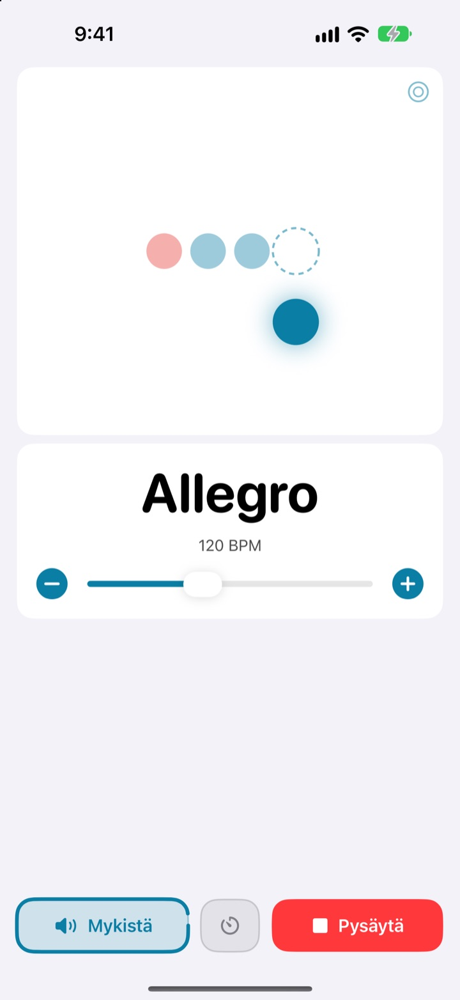
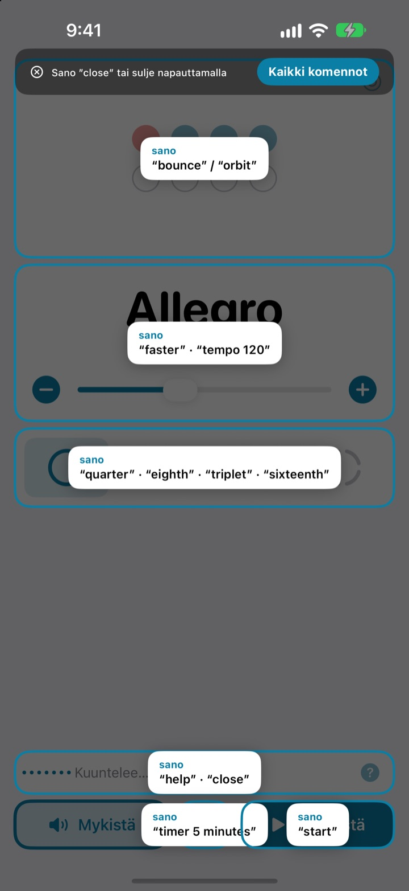
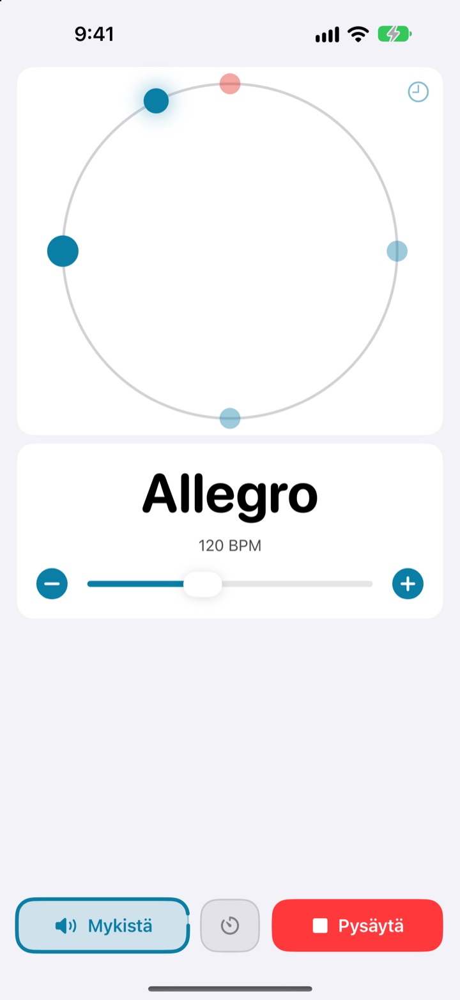
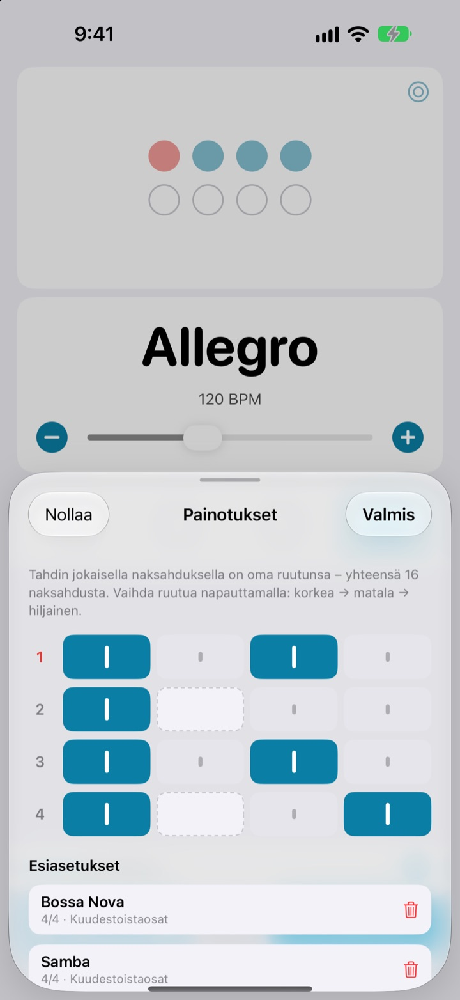

Kädet soittimella.
Tempo äänellä.
Sano kesken fraasin faster, niin naksahdus nopeutuu. Soittoa ei tarvitse keskeyttää eikä kurottaa näytölle. Komennot ovat lyhyitä englanninkielisiä sanoja.
Täysi metronomi ja ääniohjaus ovat ilmaisia.

Kokeile ääneen
Napauta komentoa tai laita mikrofoni päälle ja sano se englanniksi. Laita äänet kuuluviin, se naksuttaa.
Katosiko soiton tuntuma vain siksi, että piti säätää tempoa?
Jousi alas, plektra hampaisiin, kaksi napautusta näyttöön, ja juuri löytynyt tuntuma on poissa. Not My Tempolla vaihdat tempon yhdellä sanalla soittoasentoa muuttamatta.
Sano, niin se seuraa
Lyhyitä englanninkielisiä sanoja, kuten start, faster ja tempo 120. Sovellus kuuntelee heti, kun avaat sen, eikä iOS:n Ääniohjausta tai mitään saavutettavuusasetusta tarvitse ottaa käyttöön.
Unohtuiko komento? Sano help, niin kaikki komennot näkyvät näytöllä.

Näe myös isku
Valitse pomppu, rata tai rengas. Ensimmäinen isku näkyy punaisena ja naksahtaa kovempaa.
Napauta rataa tahdissa, niin näet, kuinka lähelle osuit.

Tallenna painotukset joka kappaleelle
Aseta tahdin jokainen naksahdus korkeaksi, matalaksi tai hiljaiseksi ja tallenna se esiasetukseksi. Tee bossa nova- tai sambakuvio kerran, niin ensi kerralla riittää valita se. (Pro)

Alkuun kolmessa vaiheessa
- 1
Avaa sovellus
Se alkaa kuunnella heti.
- 2
Salli mikrofoni
Se pyytää kerran luvan mikrofoniin ja puheentunnistukseen.
- 3
Puhu tai napauta
Jokaiselle komennolle on myös säädin näytöllä.
Mitä voit sanoa
- start · stop
- toista, tauko
- faster · slower
- 5 BPM nopeammin tai hitaammin
- up · down
- 1 BPM nopeammin tai hitaammin
- tempo 120
- hyppää suoraan haluamaasi tempoon
- double · half
- tempo kaksinkertaiseksi tai puoleen
- three beats
- vaihda tahtilaji
- quarter · eighth · triplet · sixteenth
- jako neljäsosiin, kahdeksasosiin, trioleihin, kuudestoistaosiin
- louder · quieter · mute
- naksahdus kovemmalle, hiljemmalle, mykistä
- volume 60
- aseta äänenvoimakkuus prosentteina
- bounce · orbit
- vaihda iskunäkymää
- timer 5 minutes
- aseta harjoitusajastin
- practice
- tempo nousee harjoitellessa (Pro)
- tune
- avaa vireenmittaaja (Pro)
- help
- näytä kaikki komennot
- close · done
- sulje paneeli
Puheentunnistus käyttää amerikanenglantia, joten komennot sanotaan englanniksi. Muuten sovellus on suomeksi, ja jokaisen komennon voi antaa myös napauttamalla.
Metronomi on ilmainen. Pro, kun haluat enemmän.
Ilmainen
- Kaikki äänikomennot
- Tahtilajit 1–8 iskua, ensimmäinen isku korostettuna
- Jako neljäsosiin, kahdeksasosiin, trioleihin ja kuudestoistaosiin
- Kolme näkymää: pomppu, rata ja rengas
- Napautustempo ja rytmin tarkistus
- Harjoitusajastin
Not My Tempo Pro
- Harjoitustila: muutama BPM lisää muutaman tahdin välein, kunnes saavutat tavoitetempon
- Painotuseditori ja esiasetukset kappaleittain
- Kromaattinen vireenmittaaja
Vuositilaus ilmaisella kokeilulla tai kertaostos ikuisesti
Ääniohjaus ja saavutettavuusominaisuudet pysyvät ilmaisina kaikille. Ostitko sovelluksen ennen kuin Pro oli olemassa? Silloin kaikki Pro-ominaisuudet ovat jo sinun.
Usein kysyttyä
Voinko puhua suomea?
Puheentunnistus käyttää amerikanenglantia, joten komennot ovat lyhyitä englanninkielisiä sanoja, kuten start ja faster. Ne oppii nopeasti, ja jokaisen komennon voi antaa myös napauttamalla. Muuten sovellus on suomeksi.
Se ei kuule minua.
Tarkista, että mikrofonin tila on ”Kuuntelee”. Jos se on pois päältä, napauta ”Kuuntele”. Meluisassa huoneessa tai kaiuttimen kautta soittaessa kannattaa käyttää kuulokkeita, jotta naksahdus ei kuulu mikrofoniin.
Kuuntelu sammui itsestään.
Akun säästämiseksi kuuntelu sammuu, jos komentoja ei tule muutamaan minuuttiin. Kytke se takaisin päälle napauttamalla ”Kuuntele”.
Tempo on puolet tai kaksinkertainen.
Korjaa sanomalla double tai half.
Miten käytän vireenmittaajaa?
Sano tune tai napauta aaltopainiketta tempokortissa. Soita nuotti: kun osoitin siirtyy vihreälle alueelle, soitin on vireessä. Poistu sanomalla close.
Käytän jo iOS:n Ääniohjausta.
Sammuta sovelluksen oma mikrofoni ja ohjaa sitä painikkeiden nimillä. Jokaisessa säätimessä on VoiceOver-selite.
Lähteekö ääneni jonnekin?
Ei. Puhe tunnistetaan laitteellasi, eikä sitä nauhoiteta, tallenneta tai lähetetä minnekään. Metronomi, ääniohjaus ja vireenmittaaja toimivat ilman verkkoyhteyttä.
Miten peruutan tilauksen?
Kohdassa Asetukset > Apple-tili > Tilaukset. Vuositilaus uusiutuu automaattisesti, ellei sitä peruuteta vähintään 24 tuntia ennen jakson päättymistä. Ikuinen osto maksetaan vain kerran.
Kysyttävää tai palautetta? Kirjoita osoitteeseen leeo@kakao.com.